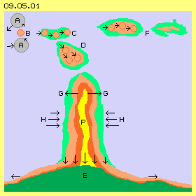
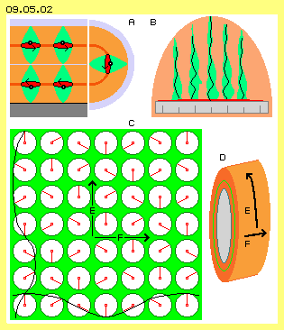
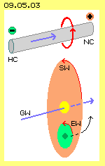
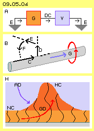
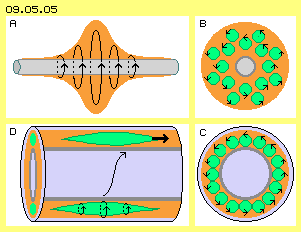
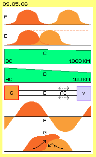

Emerge of Lightning
A huge stream of energy flows to the ground when lightning strike towards the earth. At picture 09.05.01 once more the main characteristics of that occurrence are sketched schematic. The causing process are the ´nearby-collisions´ of air- and water-particles (A, grey) within the storm-clouds. Sometimes some balancing aether-movements are necessary between these vortex-complexes, which sometimes result the sphere-shaped motion-unit of an electron (B, red). The electrons temporary can dock at material particles, finally however many free electrons whirr through the aether, especially at below part of storm-clouds.
Analogue to gas-particles, the electrons collide and fly chaotic into all directions. They can fly long distances, if few obstacles in shape of other aether-vortices exist. Into that direction of few resistance one electron can follow the other. The aether by itself is stationary and takes only temporary the motion-pattern of the electron passing by. Immediately behind that vortex-complex the aether comes back to its previous motion-shape, as a rule the ´trembling´ of Free Aether. If however many electrons are racing as a fast follow through the same track, the aether of that area will not come back to its original motion-shape in total. The electrons leave behind a ´trace´, which is marked light-green at C.

The internal pattern and the movements between the electrons mutually adjust. Within that ´formation´ comes up an area of relative uniform and intensive swinging (marked light-red at D). The environment therefore is forced to increased balancing movements (marked light-green at D). Resulting are areas with the typical motion-pattern of moving electrons, thus prevailingly rosette-pattern with steady variations into all three directions of space.
These motion-units are not stabile all times. Many branches of lightning are racing from one cloud to the next and disappear again (like sketched at F). The Free Aether forces all motions into its ´nervous swinging at narrow room´. Only if the vortex-systems show a stabile motion-structure, they can resist the pressure of Free Aether. At the other hand, diverse branches of lightning can merge and force the ambient aether into their motion-pattern.
Normally the lightning comes forward only by short steps. At each step a forward-directed motion-component comes up, building a ´slipway´ at the borders. That slide path will be tube-shaped because there the motions can run all around and thus in endless loops. Like mentioned upside at picture 09.03.08 however the ´border-problem´ remains, here at the front-end of that pipe. These turbulences hinder the progression of that branch again and again.
Striking of Lightning
This situation changes abruptly when a lightning-canal (by occasion) arrives at the earth (E, green). Then the swinging and striking movements suddenly can spread at a wide surface. Now all tensions by dammed-up motion-components are released. Within whole canal an equal ´flowing´ comes up and these intensive motions demand additional balancing areas. Resulting is a ´pressure´ onto the ambient aether (see arrows G). Even the air-particles are pushed aside (and their following ´implosion´ produces the sound of thunder).
Quite analogue is the process within the aether: the strong extension of the lightning-canal builds a much wider surface, so some later the general aether-pressure compresses that ´motion-tube´ (see arrows H). At this phase no longer exist separated electrons. By many steps (marked by different colors) that canal increased by additional layers of balancing motions, thus by shells of analogue motion-pattern. At the other hand, a contrary pressure comes up each time. Upside at these unstable motion-rests F resulted the dispersion of that structure. Here however the motions are enclosed in this canal, so all aether within is forced to according swinging motions. At the centre of the canal often comes up a synchronous swinging at wide tracks, which mostly is called a ´plasma´ (P, yellow). So a plasma is not the ´fourth physical state of materia´ but an especially intensive swinging motion at relative wide tracks, which are closed in loops - however existing by nothing else than quite normal aether.
At the location of lightning-strike temporary exists extreme high charge. This does not exist by separated sphere-shaped electrons, but by intensive swinging aether at flat layers. The ´electric current´ again is produced by the general aether-pressure, which flattens that ´motion-hill´. When all processes calmed down, the earth-surface shows the normal charge level - which still does not exist by electrons, but is a synchronous swinging layer of aether.
Swinging-Pattern of Charge

A swinging-pattern of charge was already shown at an earlier chapter at picture 09.03.08. A part of this picture here is shown once more at picture 09.05.02 upside left at A. In principle, that swinging motion is running in shape of a double-crank, because that pattern allows balancing of aether movements at narrow space. If a part of that swinging is pushed off the edge, that motion-pattern can be accomplished to a sphere-shaped unit. Thus the stabile structure of an electron might result. Indeed, at sharp edges of conductors (and also of non-conductors) electrons are emitted. So an electron practically is a ´drop of charge´ with likely motion-pattern. The electron is swinging motion in shape of a sphere, while charge is represented by a flat swinging movement.
The static charging of a ruler was discussed at previous chapter at picture 09.04.01, which once more is drawn here at this picture upside right at B. Most remarkable is the electric field (light-red) obviously reaching far out into the space. The height of the charge (dark-red) at the surface of the ruler obviously can not be only one electron (as assumed at A). The swinging must occur in many levels, thus in shape of many double-cranks. Here are drawn some black connecting-lines, multiple spiral twisted. The electric field is produced by the motions of many ´spindles´ of that kind. All spindles are moving parallel to each other, however must not behave totally synchronous. The radius of all motions will steady vary in vertical and in horizontal directions.
At this picture below left at C, the green face represents a horizontal plane within an electric filed. Here again are drawn clocks to visualize the movements of observed aether-points (each at the end of clock-hands). In principle, all clocks could turn likely and all hands could shown into likely direction. Then the whole face is swinging totally synchronous, however the aether would ´spill over the border´ all around. This problem is reduced when the clocks are time-shifted, e.g. like here sketched from left to right and also top down. The black connecting-lines of observed aether-points build waves, here into both directions.
At an earlier chapter at picture 09.03.04 was shown, how the ´hills and dales´ of waves wander through the aether. The connecting-lines represent neighbouring aether-points, which in principle keep their location. Nevertheless the wave-movements can affect thrust onto other vortex-complexes. If that swinging does not occur only at simple circle-tracks, automatic and inevitably come up movements-with-stroke (see earlier picture 09.02.05). This asymmetry is balanced by the contrary movements at both levels of double-cranks. In addition upside was stated, these ´clocks´ must not be arranged totally parallel to the plane, it must not exist likely distances between, they must not turn totally likely and likely fast. Like upside mentioned as a rough comparison, one can imagine the charge like swaying crop-fields.
Here at this picture, the direction of movement of wave-pattern is marked by arrows E and F. At D is shown, how that flat pattern (red) is rolled around a conductor (grey). Instead of previous green plane, now the swinging-level represents the green ring at that cross-sectional view through the conductor. Again are drawn previous both directions E and F, which inescapably come up at each difference to an exactly conform circled swinging motion.
Drive-Direction - Left-Turning

For a change, here a quote of text-books: "When an electric current I flows, a magnetic field H comes up within the vacuum. Within the air one observes the magnetic induction B all around I. B and H are connected via B = µ H with µ = permeability. The direction of H is determined by right-screw-rule: if the electric current shows into direction of screw-feed, H shows into turning sense of the screw" (by conventional definition of current-direction).
I do not like such abstract statements, because the essential facts are explained better by simple sketches, e.g. like at picture 09.05.03 upside. Here however the current all times is looked at by its real direction, thus flowing from minus to plus respective all times from high charge HC to normal charge-density NC (or even to low charge LC). The current thus flows along the grey conductor from left to right, like marked by the blue arrow. As mentioned upside at the clock-example, this motion is coupled with a second movement. This is running at right-angles to the first, thus around the conductor-wire, like marked by the red arrow. The rule for both motion-components realiter is: by view in direction of real electric current, the according magnetic flow is left-turning.
Galactic Law
This is a ´nature-law´, which one has to obey, even no obvious founding exists. Only one fact might be quite sure: the electric like the magnetic fields demand a real medium, because they have real affects on ´real materia´. Possibly the reason for that left-turn-rule might be shown at this picture below: the sun is moving within the galactic whirlpool GW, here into the direction of the blue arrow. Around the sun (light-yellow) everything is left-turning within the solar whirlpool (SW, light-red). Embedded is the whirlpool of the earth (EW, light-green), which is also left-turning. So the earth (dark-green) is moving within galactic space spiral-forward left-turning. Above this, the earth by itself is left-turning around its axis. Above this, all turning-axis are mutually inclined. All these motions are based on motion-pattern of the aether. So probably the aether at earth-surface in general is impressed by that ´in driving-direction left-turning´.
For explanation of movements within the aether, as starting point was used a clear circular motion. Each overlaying movement results asymmetric processes, e.g. also inevitably a pushing strike-component. All aether, at least within our galaxy, however is not ´neutral´. It shows already motion-components, which make the sun and planets drift within space. So also the Free Aether at the earth is not really ´stationary-resting´. Thus pure circle-movements can not serve as a basis. All additional movements are already overlaying these multiple left-twisted spiral-movements. So e.g. also the motion-structures of an atom are based on that galactic-solar-earthly motion-cocktail.
Atoms and solid bodies as compounds of vortex-complexes react as a whole at changes of direction and speed, according to mechanical laws, finally and all times in shape of their inertia. The electric and magnetic fields (mainly) exist outside of these materia-units. So electromagnetism occurs direct within the aether. These fields are motion-pattern which are directly ´stamped´ on the ´Free Aether of galactic characteristic´. When these ´open´ structures are locally moving (e.g. electric current is running along a conductor), obviously they must obey the usual way: never straight forward but all times screwing forward like left-threads.
Wave-Hills of Direct-Current
At the following the characteristics of DC are discussed. At picture 09.05.04 upside at A the general principle is sketched. A generator (G, red) takes charge from the earth (E) and accelerates it, so electric flow is generated. This current flows all times only into one direction (see arrows) along a conductor, thus in shape of DC. A consumer (V, blue) uses the ´energy of that flow´. The remaining charge flows back to the earth. At first is assumed, the generator does the job of acceleration by separated pushes.
At B the process of acceleration is sketched and (simplistic) one could compare the aether with a fluid. Along the round conductor (grey) the aether is pushed forward, like marked by black arrow C. This linear thrust is hindered by resistance, because at the frontside already exists aether-volume. So that motion must swerve aside like marked by arrow D. However also there exists resistance demanding a second redirection, by right-angles as marked by arrow E. All linear motion along the conductor is affected by likely resistance and all around the forward-movement is redirected. All arrows E are showing around the conductor, as marked by arrow F. Now this movement is without resistance, because involved aether-volumes mutually escape at this circle. So a pushing acceleration into longitudinal direction of the conductor inevitably demands a circling movement around the conductor (like marked by blue and red arrows at G). Theoretically these diversions could also turn right - within a neutral environment. Obviously however the left-turn is embossed at the aether of our galaxy so strong, every additional movement of electromagnetic fields must behave accordingly.

At this picture below at H a grey conductor is drawn at the bottom. Above its surface is marked the layer of normal charge (NC, light-red), which is present all times. The acceleration-pressure of the generator (see red curved arrow GD) piles it up to high charge (HC, dark-red). The swinging of normal charge (NC) is marked by small double-cranks. With that pile-up of charge these spiral-twisted connecting-lines now are reaching far out into ambient space. The swinging occurs at longer radius, so outside additional aether must take balancing movements. The connecting-lines become multiple twisted, e.g. like at the environment of previous ruler. So that thrust-impulse of the generator produces intensive motions along and around the conductor, thus is working against the ´resting´ Free Aether.
As soon as that impulse becomes weaker, the Free Aether can work against this ´disturbance´. The general aether-pressure reduces the swinging movements to their normal (average) size. This process occurs at the backside of the ´charge-hill´. So the generall aether-pressure (AD, blue curved arrow) pushes that ´flow-wave´ forward along the conductor. At the front, the ´motoric impulse´ of the generator is still running forward, at the rear the Free Aether in addition is pushing forward that piled-up charge.
Longitudinal Spindles
Previous considerations once more pointed out, linear movements are problematic while turning movements are easy running within the aether. At picture 09.05.05 upside left at A this ´DC-wave´ is sketched by longitudinal cross-sectional view once more. The current is moving from left to right. Around the conductor (grey) the swinging increases, achieves a maximum size and decreases to the end. This is practically a double-cone, like shown several times at previous chapters. The photon is the most simple pattern of that kind, which same time is running by maximum forward-speed. There a single-crank does only one turn which is ´screwing´ forward through the aether.
The conductor inclusive this DC-wave are much thicker, e.g. with diameters of some millimeter. No aether is ever turning around such a wide radius. At this picture upside right at B the conductor (grey) is drawn by cross-sectional view and the wave (light-red) around it. The seeming wide-range motion around the conductor realiter is the result of many small vortices (green circle-faces). Every aetherpoint is moving only within a narrow area and all neighbours are swinging parallel and likely sense (see arrows). A motion turning around the conductor finally comes up by an asymmetric swinging: every aetherpoint is moving at a ´track-with-stroke´, where the fast track-section shows into tangential directions. Analogue to the potential-vortices, the stroke-component becomes stronger towards inside. This corresponds to the motion-pattern of an ´aether-whirlpool´.
At this picture below right at C the proportions correspond some better to reality, however they are not really true to scale. The conductor has a radius much wider, the electric current is running within a relative thin layer. As charge and also the current stick at the surface, the conductor inside can be hollow or can exist by non-conductive light material. Here the centre is drawn light-grey and the hollow-conductor is marked dark-grey. Around the surface of the conductor exists a layer (light-red) of swinging aether. This is a compound of many synchronous turning tiny small vortices (some of are marked as green circle-faces with arrows). Normally the conductor is enclosed by an isolating coating, which here is drawn light-grey with black border. Below left at D is drawn a corresponding longitudinal cross-sectional view.

Instead of that wide-range turning around the conductor (like drawn upside at A), the ´flowing of current´ occurs only within a narrow area between the surface of the conductor and the inner side of the isolator. All small vortices are very thin however long-stretched spindles (light-green). At the tips thus the aether-movements must be extended only at a relative small radius. Like a photon these sharp spindles are ´screwing´ forward within the aether. However this is only possible along a conductor, because only these materials show an according ´aura´ at the surface. At the other hand, the materials of isolators impede this process. The available ring-shaped face thus might be ´only some atom-diameter´ thick.
At ´static´ charge e.g. of previous ruler, the spiral-twisted connecting-lines respective the aether-vortices ´stand upright´ at the surface. This is also true for resting charge at a conductor. As soon however a forward-impulse comes up, the vortices ´tilt´ into longitudinal direction - and analogue to photons the motion-pattern of these spindles can move nearby with light-speed along the conductor-surface - even or just because all aether is swinging only at most narrow tracks.
Energy is Movement - of Motion-Pattern
Photons are smaller than electrons by hundred times and thus only few aether is involved. Even photons are racing by light-speed, they show few kinetic energy. If previous thin spindles have a diameter e.g. like electrons, thousands can swing parallel within that small ring and numberless around the conductor aside each other. If that motion-volume is moving by light-speed, that ´flow´ has considerable kinetic energy - even no particles nor aether is racing forward.
However the conditions should fit to the motion-necessities of the aether at its best. When using flex-wires - naturally left-twisted - the aether can move along screw-shaped faces. Instead of round flex-wires also flat and spiral-twisted copper-tapes could be used. The isolation between the tapes could reach further out, so wider cross-sectional face is available for the current. As all movements are running synchronous, the outside isolation-cover won´t hinder the flow, but protects it from occasional disturbances of ambient aether. The motion-pattern of the current penetrates also the aura and outer area of the conductor. If its particles can not swing resonant, the forward motion of the current is hindered.
Also small aether-vortices between the atoms are shifted some forward: the free electrons within the conductor are ´crawling´ forward up to one millimeter per second. These electrons thus can never be the ´carrier of electric current´. Also the model of a magnetic and an electric ´field´ does not match the reality. Electric (direct-) current is the result of many very small and very thin ´vortex-spindles´, which are swinging synchronous around the surface of a conductor, where that motion-patter is ´screwing´ forward within the aether nearby with light-speed.
Pulsating or steady Flow

At picture 09.05.06 upside at A, a generator pressed a light-red ´wave-hill´ at the conductor and some later a second, marked dark-red. These forward-impulses are transferred into thin spindles, which are racing along the conductor-surface. As shown upside by example of the lightning, the aether does not come back to its original shape of Free Aether after a fast follow of similar movements. This happens especially within that ´protected´ area between the conductor and the isolation-coat. At this fast follow of pulsating DC the spindles become long-stretched and finally build an ´endless rope´ of uniform movement.
At second row of this picture at B are drawn two generator-impulses, which send direct-current ´phase-shifted´ into the line. The ´voltage´ keeps nearby constant respective the steady high charge here is marked by the dotted line. The whole space available around the conductor thus comes into a constant uniform swinging movement and that synchronous long-stretched motion-pattern is running forward without resistance. There are no more disturbing motion elements. Just opposite: these movements represent kinetic energy - which can never get lost within the gapless aether. Here that motion-shape is protected against outside disturbances from the beginning to the end of the wire - thus the steady DC can do nothing else but flowing forward on and on.
At next row C a graph is drawn, showing a drop of five percent: that´s the decreasing-rate of energy by the transport of DC - at a distance of 1000 km. Just these days a tv-message reported a success-story for ABB in Mannheim: electric energy of wind-parks at the North-Sea is transported to South-Germany via special procedure in shape of DC - with nearby no losses.
Alternating Current
Next row D of this picture shows a corresponding graph with a line decreasing by 30 percent: this is the loss-rate of the transport of alternating current AC - at a distance of only 100 km. The general principle of AC-technology is schematic sketched at row E. Between the generator (G, red) and the consumer (V, blue) must exist two wires at any case. At both conductors AC is flowing, alternating to-and-fro (see arrows). At three-phase-current (discussed later) in principle are demanded three times two wires. A ´star-circuit´ demands only four or at special cases only three wires.
The alternating current has some essential advantages (also discussed some later). The changing voltage builds nice (sinus-) curves at the oscillator, e.g. like schematic drawn at row F. The generator practically is a ´vibrator´ as it presses hundred ´charge-hills´ onto the circuit each second, fifty times into the one direction and fifty times into the opposite direction (in USA even with 60 Hz). The real processes within the aether however are ´disastrous´, like sketched at below row G of this picture.
Loss, Chaos, Adversity, Unhealthy
A light-red wave-hill comes back from the consumer, here from right to left side. It is some reduced in comparison with the dark-red wave-hill, which some later is pressed onto the wires, in contrary direction, thus here from left to right. Both hills meet and the new high wave-hill practically spills over the old and weaker hill (see arrows). All around the conductor all vortex-spindles hit frontal. The new spindles are stronger and finally overcome the old spindles. At this crash exist controversial movements, demanding corresponding wider areas of balancing movements. Afterward, the Free Aether crushes down that ´motion-bump´. However a part of the motion-shred is rubbed off and radiated into the environment. One can feel this physically below high-voltage power-lines, at distance of many meters.
Finally after some delay, the synchronous swinging of all vortex-spindles is regenerated. Their stoke-component into left-turning sense, commonly is called an ´induced magnetic field´. It´s not astonish, it comes up some later, phase-shifted to the ´electric field´. Both fields are suggested to build right-angles (analogue to the arrows C and E at previous picture 09.05.04). In reality, both are only two components of one motion-pattern moving spiral-forward within space - as long as unhindered and free of stress. However already based on the principle of functions, remarkable resistance and clear losses come up. So probably that alternating current is moving essentially slower than light-speed.
Without any doubts: Alternating current (respective three-phase-current) functions well and is used with great success since many decades. Without these inventions, todays civilization would not be possible. However this technology shows great losses - unfortunately not to avoid or even judged to be normal. These uncontrolled radiations are unhealthy, because the procedure in general is not aether-conform. Nevertheless the advantages are considered more valuable. However by new sight of aether, probably new techniques could be developed, fitting better to the necessities and possibilities of that working medium.